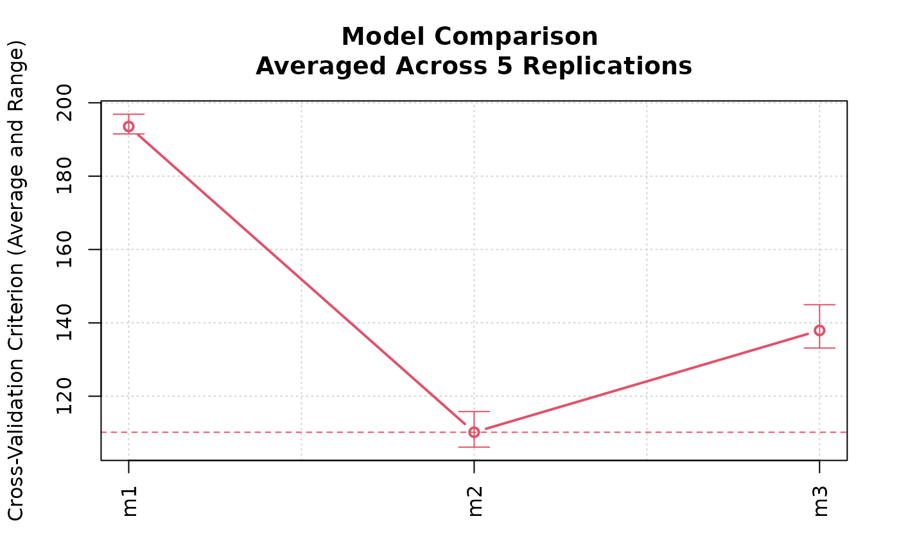

Cross-Validate Several Models Fit to the Same Data
models.RdA cv() method for an object of class "modlist",
created by the models() function. This cv() method simplifies
the process of cross-validating several models on the same set of CV folds.
models() performs some
"sanity" checks, warning if the models are of different classes, and
reporting an error if they are fit to apparently different data sets or
different response variables.
Arguments
- ...
for
models(), two or more competing models fit to the the same data; the several models may be named. Forcv(), additional arguments to be passed to thecv()method applied to each model. For theprint()method, arguments to be passed to theprint()method for the individual model cross-validations. For theplot(), method, arguments to be passed to the baseplot()function.- model
a list of regression model objects, created by
models().- data
(required) the data set to which the models were fit.
- criterion
the CV criterion ("cost" or lack-of-fit) function, defaults to
mse.- k
the number of CV folds; may be omitted, in which case the value will depend on the default for the
cv()method invoked for the individual models.- reps
number of replications of CV for each model.
- seed
(optional) seed for R's pseudo-random-number generator, to be used to create the same set of CV folds for all of the models; if omitted, a seed will be randomly generated and saved.
- quietly
If
TRUE(the default), simple messages (for example about the value to which the random-number generator seed is set), but not warnings or errors, are suppressed.- x
an object of class
"cvModList"to be printed or plotted.- y
the name of the element in each
"cv"object to be plotted; defaults to"adj CV crit", if it exists, or to"CV crit".- xlab
label for the x-axis (defaults to blank).
- ylab
label for the y-axis (if missing, a label is constructed).
- main
main title for the graph (if missing, a label is constructed).
- axis.args
a list of arguments for the
axis()function, used to draw the horizontal axis. In addition to the axis arguments given explicitly,side=1(the horizontal axis) andat=seq(along=x)(i.e., 1 to the number of models) are used and can't be modified.- col
color for the line and points, defaults to the second element of the color palette; see
palette().- lwd
line width for the line (defaults to 2).
Value
models() returns a "modList" object, the
cv() method for which returns a "cvModList" object.
Examples
data("Duncan", package="carData")
m1 <- lm(prestige ~ income + education, data=Duncan)
m2 <- lm(prestige ~ income + education + type, data=Duncan)
m3 <- lm(prestige ~ (income + education)*type, data=Duncan)
(cv.models <- cv(models(m1=m1, m2=m2, m3=m3),
data=Duncan, seed=7949, reps=5))
#>
#> Model m1 (averaged across 5 replications):
#> 10-Fold Cross Validation
#> method: Woodbury
#> cross-validation criterion = 195.0866 (2.307011)
#> bias-adjusted cross-validation criterion = 193.5434 (2.195082)
#> full-sample criterion = 166.8155
#>
#> Model m2 (averaged across 5 replications):
#> 10-Fold Cross Validation
#> method: Woodbury
#> cross-validation criterion = 111.7281 (4.908514)
#> bias-adjusted cross-validation criterion = 110.1813 (4.623137)
#> full-sample criterion = 84.39899
#>
#> Model m3 (averaged across 5 replications):
#> 10-Fold Cross Validation
#> method: Woodbury
#> cross-validation criterion = 142.3619 (5.682756)
#> bias-adjusted cross-validation criterion = 137.932 (5.264929)
#> full-sample criterion = 74.45878
plot(cv.models)
